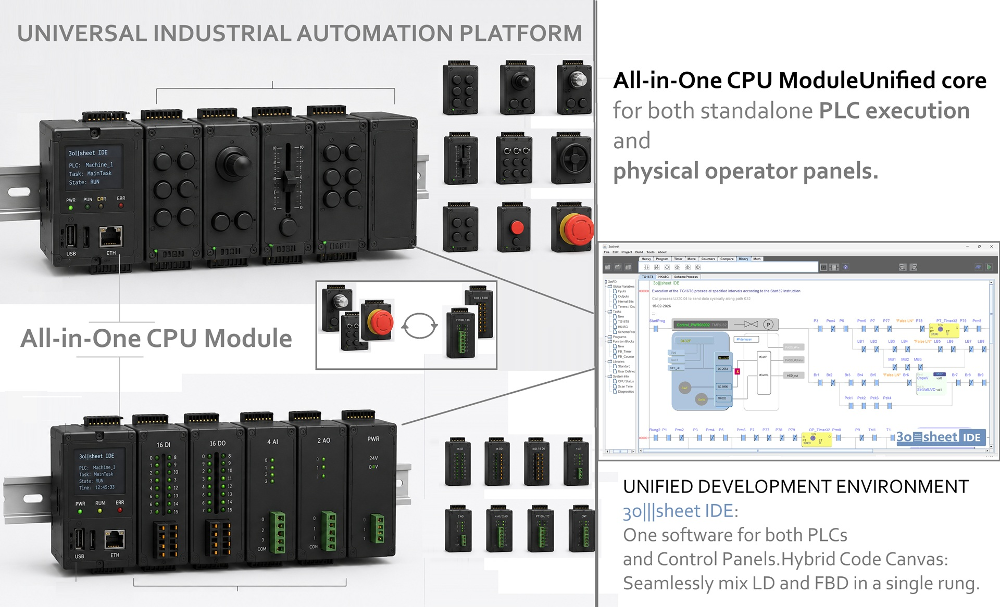

3o|||sheet is a universal software environment for developing applications for Programmable Logic Controllers (PLCs).
- Hardware Independence
- Integrated Development Environment (IDE)

3o|||sheet is a universal software environment for developing applications for Programmable Logic Controllers (PLCs).

A lightweight, cross-platform IDE built on OpenJDK. Runs on single-board computers with minimal resources.
Supports LD, FBD, and ST languages plus a virtual machine instruction set for advanced logic design.
Offers extensive debugging capabilities: developers can modify code in real-time without physically restarting the PLC.
The development environment can create executable programs for the PLC in two modes:

Is a standalone application that compiles text programs written in LD, FBD, ST and .3osheet into executable bytecode for a virtual machine.
The compiler can be integrated into third-party development tools (for example, Visual Studio, etc.).
It includes a complete set of tools for working with complex custom variables, virtual stack, and context management, enabling the development of sophisticated recursive algorithms and multithreaded tasks (coroutines).

Register-based Virtual Machine running safely in a sandbox. Works on devices with only 8 KB RAM and full peripheral access.

The system supports two modes of operation: either the execution of multiple independent contexts (virtual machines running distinct programs) or a single program operating in DME mode with N replicas

The platform incorporates a unique divergent architecture designed for maximum reliability and fault tolerance in safety-critical applications. Divergent Multi-Version Execution (DME) is a runtime semantic consistency verifier for diversified executions. Each replica is compiled independently, producing distinct physical code and data memory layouts while preserving identical opcode-level semantics and isomorphic control-flow graphs. Faults are detected by comparing canonical instruction traces—including opcodes, register identifiers, loaded/stored values, and computed results—while explicitly discarding layout-dependent addresses. The approach targets bare-metal embedded systems without an MMU, particularly 32-bit controllers. DME transforms low-level correlated perturbations into observable semantic divergence or structural address-space collapse without altering program semantics.
Unique protection mechanisms of Divergent Multi-Version Execution architecture that standard redundancy schemes cannot provide.
| Threat or System Requirement | Standard Lockstep / TMR | DME Superiority ✨ |
|---|---|---|
|
Highly Correlated Faults (EM pulses, radiation, voltage glitches) |
DEFENSELESS A single perturbation shifts all replicas identically. The system accepts the failure as correct. |
Absolute Protection Driven by complementary branch signs and NOP-decorrelation, identical faults force replicas onto divergent semantic paths. Instant detection! |
|
Control-Flow Hijacking (Return address corruption, buffer overflows) |
BLIND SPOT If the corrupted address falls within an allowed region, all replicas transition simultaneously. |
Zero-Latency Intercept Our Address Non-Aliasing layer halts execution the exact millisecond cross-replica addresses collapse, long before any bad data spreads. |
|
Software Bug Resilience (Null pointer dereference, "wild" pointers) |
UNSUPPORTED Logical software bugs replicate across identical architectures without triggering flags. |
Runtime Semantic Validation Accidental value-as-pointer assignments trigger immediate address-space collapse detection. DME acts as a live validator for pointer semantics. |
|
Hardware Costs & Constraints (Requirements for high-end cores and MMUs) |
HIGH DEPEDENCY Demands specialized, expensive multi-core chips with heavy silicon overhead. |
Hardware Agnostic Designed natively for bare-metal, low-cost 32-bit controllers (e.g., ARM Cortex-M class) without virtual memory (MMU). Entirely managed at compile time. |
Measured execution times for boolean and Integer and floating-point operations on different microcontrollers and PLCs.
| Device | Boolean Operation | Integer / Floating-Point Operation |
|---|---|---|
| STM32G030 64Mhz (3o|||sheet Runtime) | 1.0 μs | 3.6/24 μs |
| STM32F103 72Mhz (3o|||sheet Runtime) | 1.1 μs | 3.2/16.6 μs |
| STM32F407 168Mhz (3o|||sheet Runtime) | 0.6 μs | 1.8/1.8 μs |
| CH32V203 (144Mhz Mode) (3o|||sheet Runtime) | 0.8 μs | 2.1/18.3 μs |
| CH32V307 144Mhz (3o|||sheet Runtime) | 0.8 μs | 2.0/2.0 μs |
| Rockwell Micro810 | 2.5 μs | 8.6/ - μs |
| Rockwell Compact GuardLogix 5380 1Ghz | ~0.01–0.05 μs | ~0.01–0.08 μs |
| Siemens S7-1200 | ~0.08μs | ~2.3μs-4 μs |
Это уникальное решение, которое объединяет в себе полноценный программируемый логический контроллер (ПЛК) и интеллектуальный пульт оператора в одном устройстве. Такая архитектура позволяет не только управлять технологическим процессом, но и визуализировать данные, а также быстро вносить изменения в логику работы прямо с пульта, без использования внешнего компьютера.
Такая интеграция существенно снижает затраты на оборудование (не нужен отдельный HMI-панель), упрощает монтаж и сокращает время разработки, так как отпадает необходимость настраивать протоколы обмена между ПЛК и пультом.

A proprietary, world-first hardware-software ecosystem powered by 3o||sheet IDE
Unprecedented Architecture: This is a proprietary, industry-first concept that has no direct analogies on the market. Unlike traditional automation setups that rely on separate PLC hardware and HMI panels communicating over slow protocols, this platform completely merges both worlds into a single, unified execution layer.
Traditional industrial automation strictly separates control logic (PLC) from the user interface (HMI). This platform breaks that paradigm with a proprietary Unified Core architecture where a single runtime executes control logic and directly drives physical operator panel elements natively.
A completely unique, unified software environment engineered to configure hardware, program control logic, and design panel layouts inside a single workspace.
A flexible, stackable hardware topology designed for rapid custom physical interface deployment.
A high-performance, hardware-agnostic execution engine built for industrial reliability.